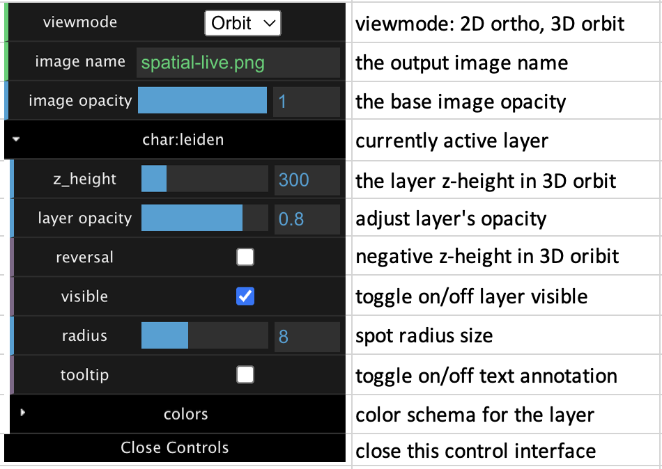

User Guide
A quick demo
Spatial-Live has shipped with a built-in exploration demo with an intuitive and straigthforward user interface. The left panel primarily control the activation or deactivation of various variable layers. When toggled to the “on” state, the corresponding layer will be added into the visual output, with the active layer indicated by a “yellow” menu item.
The middle pane renders the visual output promptly and responsively, updating whenever paramters are modified. It offers several mouse actions: zooming (using the mouse wheel), rotating (by holding the left mouse button), and dragging (by holding “Ctrl” + left mouse button). Mac OS users may need to replace the “Ctrl” with the “Command” key.
The top-right panel offers a user-friendly interface for conveniently adjusting parameters that control the appearance of the currently active layer and optimizing the layout of each layer. Particullaly, it allows you to switch between two view modes: the 2D orthographic mode and the 3D orbiting perspective mode for a versatile viewing experience.
Variable types and visual layers
Basically, in spatial omics data processing, regardless of the data source’s origin, from the perspective of Spatial-Live, datasets can consistentlly be categorized into four variable types: categorical, numerical, gene heatmap and geometric shape variables. Spatiall-Live adeptly generates tailored visual layers for each of these variable types. These are elucidated below:
Categorial variable -> ScatterplotLayer
Each categorial variable will be rendered into a ScatterplotLayer, where each data element is represented by a small circle dot (spatially-resolved spot). The color of these dots is assigned based on their categorial value, and the radius of these circle points can be adjusted to match the spatial resolution of spots.
Numerical variable -> ColumnLayer
Each numerical variable can be visualized using a ColumnLayer, where each data element is represented by an extruded cylinder column. The height of each column is proporsional to the range of numerical values. Similar to the categorical variable in ScatterplotLayer, the radius of cylinder can be adjusted to match the spatial resolution of spots.
Gene Heatmap variable -> HeatBitmapLayer
Gene heatmap variables, while fundamentally numerical, are distinguished from the previously mentioned numerical variables due to the spatial resolution of spots on the image, particularly the gap distance between spots, akin to the “radius” parameter in the ScatterplotLayer and ColumnLayer. For gene heatmap variables, Spatial-Live generates a continuous heatmap layer using Gaussian estimation to fill these spatial gaps, using gene expression values as weights. Here, we employ the Fast Gaussian kernel density estimation (fast-kde) for gene heatmap plotting.
Geometric shape variable -> GeoJsonLayer
Each geometric shape variable corresponds to a GeoJson file, encompassing collections of diverse geometric shapes rendered as a GeoJsonLayer. While optional in Spatial-Live, this feature can prove useful when users wish to include custom annotations in specific regions of interest (ROI) on the image, such as cancer cell-enriched regions or cell segmentation.
Input files
To launch Spatial-Live, you’ll need to provide specific input files, with at least two being mandatory. The first essential file is the image file, and the second is a CSV file containing properly formatted columns, each corresponding to different types of variables. To simplify this process, we’ll use files from the “quickdemo/kidney” to illustrate the format specifications for these files.
IMAGE file (for example: quickdemo/kidney/output/kidney_demo.png)
Currently, Spatial-Live exclusively accepts PNG files as input images (other image formats can be easily converted to PNG using various tools). It is crucial to note that this input image defines the pixel coordinate space for all data plotting within the tool. You can find an example image file at “spatial-live/quickdemo/kidney/output/kidney_demo.png”. Please note that only one image file is allowed per case.
CSV file
The CSV file serves as the primary means for Spatial-Live to define variables and their correspoding layers, and it comes with specific constraints that must be followed. Please note that each case should have only one CSV file.
- Mandatory columns: The file header must include three essential columns.
“id:spot”: the unique ideentifier representing each cell/spot entity.
“pos:pixel_x”: the pixel position along the X-axis in the image for each entity.
“pos:pixel_y”: the pixel position along the Y-axis in the image for each entity.
- Categorial columns: need to start with “char:”, and followed by a variable name. e.g.
“char:leiden”: this represents a categorical variable labeled “leiden”.
- Numerical columns: need to start with “num:”, and followed by a variable name. e.g.
“num:Plat”: this represents a numerical variable labeled “Plat”.
“num:Sprr1a”: this represents a numerical variable labeled “Sprr1a”.
- Gene-heatmap columns: need to start with “gene:”, and followed by a gene name. e.g.
“gene:Cryab”: it represents a gene name for “Cryab”.
“gene:Mrps6”: it represents a gene name for “Mrps6”.
The following table provides a few rows from the example kidney_demo.csv file:
id:spot |
pos:pixel_x |
pos:pixel_y |
char:leiden |
gene:Cryab |
gene:Mrps6 |
num:Plat |
num:Sprr1a |
|---|---|---|---|---|---|---|---|
AAACAAGTATCTCCCA-1 |
1392.05 |
750.29 |
1 |
2.449 |
2.826 |
2.971 |
1.293 |
AAACACCAATAACTGC-1 |
421.53 |
569.53 |
1 |
0.000 |
3.212 |
2.728 |
1.752 |
JSON file
The JSON file is an optional component but proves valuable when annotating regions of interest (ROI) on the image. Each feature within the JSON file must contain two mandatory keys (“id” and “group”) in the “properties” field. It is worth noting that Spatial-Live supports multiple JSON files, and these files should be placed within the same “json” folder for easy integration. The following content is extracted from the ROI_kidney.json file.
{ "features": [
{
"geometry": {
"coordinates": [ [ [ 381.96, 760.15 ], [ 343.73, 952.1 ], [ 622.3, 923.95 ] ] ],
"type": "Polygon" },
"properties": { "id": "feature-1", "group": "grp-1" },
"type": "Feature"
},
{
"geometry": {
"coordinates": [ [ [ 803.69, 872.77 ], [ 785.31, 1002.79 ], [ 960.61, 965.38 ], [ 975.25, 866.29 ], [ 921.99, 832.04 ] ] ],
"type": "Polygon" },
"properties": { "id": "feature-2", "group": "grp-2" },
"type": "Feature"
},
{
"geometry": {
"coordinates": [ [ [ 1042.96, 1043.75 ], [ 1012.11, 1189.68 ], [ 1160.95, 1132.59 ], [ 1153.65, 998.19 ] ] ],
"type": "Polygon" },
"properties": { "id": "feature-3", "group": "grp-3" },
"type": "Feature"
},
],
"type": "FeatureCollection"
}
Concise control interface
Spatial-Live offers a concise control interface located in the top-right corner. The content of this interface depends on the currently active layer. While most items remain constant, a few will change acoordingly. The following example pertains to an active ScatterplotLayer, with other layers having a similar interface.
{kind=link}
Tooltip and image export
It is worth noting that tooltips are available for most layers, except for the Gene Heatmap layer. You can enable this feature by toggling the “tooltip” button (on/off) in the control panel.
Additionally, once you have configured and stacked all the layers to your satisfaction, you can export the final visualization to an external image by clicking the “Export Image” button in the middle pane.